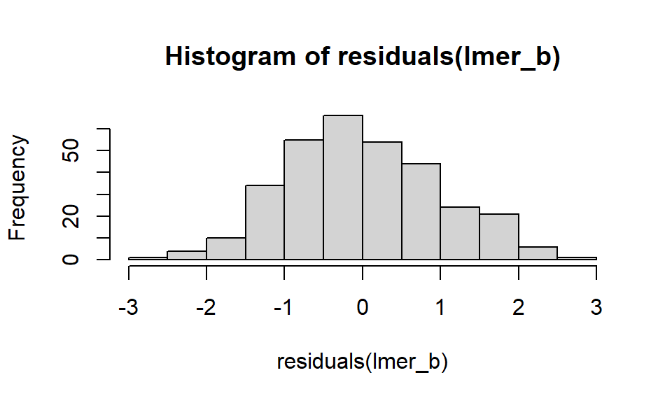

Personality stats
趣旨
個性や行動シンドローム、個性と適応度の関連を調べるうえで、統計の部分で勉強したことをまとめていきます。個性や行動シンドロームの概念的な部分は日本生態学会誌に総説 を書いていますのでそちらを参照ください。
自分で分析を始めたら、その時に詰まったところなどまとめていきます。
個体内で反復測定をしたデータ分析に共通の手法ですので、個性だけでなく、成長過程での形質相関の変化など色々応用できると思います。
General settings
rm(list=ls()) # reset workspace
options(scipen=100) # do not show numbers using exponential
# install & load packages
pacman::p_load(
tidyverse
# , openxlsx # open excel
, magrittr # extended pipe
# , foreach # Parallel processing
, knitr
, kableExtra # nice tables
, pander # nice tables
# , svglite # Export SVG plots
# , patchwork # combine multiple plots
)
# Rmarkdown settings
knitr::opts_chunk$set(
prompt = FALSE, # Do not add > or + in inline-code
message = FALSE,
comment = "",
warning = FALSE, # Mute warnings
tidy = TRUE
)
options(knitr.kable.NA = '') # Hide NAs in kable tableMCMCglmm : Houslay & Wilson 2017 Behav Ecol
T.M. Houslay & A.J. Wilson, Behavioral Ecology 2017: Supplement のまとめ。
問題点であるBLUPとは
Best Linear Unbiased Predictors - 混合モデルで推定された、ランダム効果の各個体での推定値 - 当然大きな誤差が伴う
【問題となっている手法】
個体IDにランダム効果を当てた混合モデルにおいて、各個体のランダム効果値（BLUP, 各個体の行動性向を示す）を抽出し、それを用いてさらに分析を進める（行動シンドロームなど）
【問題点】
点推定であるBLUPには誤差が反映されないので、BLUPを使った分析では慌て者の過誤が起こりやすくなる（編集元のSupplementではBLUPによる分析もしているがここでは省略）
【解決策】
個性分析（行動Repeatability）と追加分析（行動シンドロームや個性ー適応度の関連）を一つの混合モデルで片付けてしまう
Install & load packages
pacman::p_load(
MCMCglmm
, lme4
, broom.mixed # create tidy output of glmm result
, nadiv
, coda # Judge MCMC convergence
)
# Supplementで用意されている仮想データ
df_syndrome <- read_csv("learn_Personality_stats_dat_syndrome.csv")Data assumption
ここでは、複数の繰り返し計測した行動指標と、一回計測の適応度形質（mating success）データを想定。
今回の仮想データは全てオスのもので、以下の列を持つ
- Individual ID
- The repeat number for each behavioural test, assay_rep
- boldness, measured 4 times per individual
- exploration, measured 4 times per individual
- fitness, a single value for each individual
- Individual body_size, as measured on the day of testing.
単回帰モデル
各行動形質での、個体差による表現型分散の割合を計算
lme4にて計測の反復IDは固定効果に
個体IDがrandom effects
計測可能な個体の状態（ここでは体サイズ）はScaling or Centringして固定効果に
行動シンドロームを調べる全形質でこれを行う
lmer_b <- lmer(
boldness ~ scale(assay_rep, scale=FALSE) + scale(body_size) +
# Don't forget scaling variables!
(1|ID),
data = df_syndrome
)
plot(lmer_b)qqnorm(residuals(lmer_b))hist(residuals(lmer_b))
summary(lmer_b)Linear mixed model fit by REML ['lmerMod']
Formula: boldness ~ scale(assay_rep, scale = FALSE) + scale(body_size) +
(1 | ID)
Data: df_syndrome
REML criterion at convergence: 1061.4
Scaled residuals:
Min 1Q Median 3Q Max
-2.3666 -0.6478 -0.1155 0.6445 2.6892
Random effects:
Groups Name Variance Std.Dev.
ID (Intercept) 0.6951 0.8337
Residual 1.1681 1.0808
Number of obs: 320, groups: ID, 80
Fixed effects:
Estimate Std. Error t value
(Intercept) 20.09134 0.11108 180.871
scale(assay_rep, scale = FALSE) -0.04813 0.05404 -0.891
scale(body_size) 0.14113 0.10893 1.296
Correlation of Fixed Effects:
(Intr) s(_s=F
s(_,s=FALSE 0.000
scl(bdy_sz) 0.000 -0.002ここではrandom effectsのvariance componentに興味がある。
- SDは分散の平方根
動物の個性の証拠となるのは、repeatability (= intraclass correlation coefficient)
Repeatability:
- \(\frac{個体差による分散}{固定効果を考慮したうえでの全分散} = \frac{V_{ID}}{V_{ID} + V_{residual}}\)
broom.mixed::tidy(lmer_b, effects = "ran_pars", scales = "vcov") %>%
select(group, estimate) %>%
spread(group, estimate) %>%
mutate(Repeatability = ID/(ID + Residual)) %>%
kable("html", digits = 3) %>%
kable_styling("striped", position = "left") | ID | Residual | Repeatability |
|---|---|---|
| 0.695 | 1.168 | 0.373 |
この仮想データでは、ばらつきの37%が固定効果ではなく個体差によるもの。
行動シンドローム：Bivariate models
MCMCglmmでの、行動2形質を応答変数に置いたモデルを組む。各行動形質とそれらの共分散に対する、個体間分散を推定
事前分布の設定
解説は以下参照
カテゴリカル変数にはGelman priorを当てはめる
複数の事前分布に対し結果が頑健か見ておくと良い
固定効果にはNormal distribution、(co)variancesにはinverse Wishartを事前分布として使っている。
指定するもの
B: 固定効果の事前分布。Defaultは信仰の弱い正規分布
R: 残差
G: ランダム効果
ランダム効果の数だけ指定。例：
G = list(
G1 = list(V = 1, nu = 1, alpha.mu = 0, alpha.V = 1000),
G2 = list(V = 1, nu = 1, alpha.mu = 0, alpha.V = 1000),
)
)alpha.mu: Prior mean
alpha.V: 分散行列
inverse Wishart事前分布の変数
V: 事前分布のピークを決める。よく使われるのは1
nu: 信仰の強さ＝分布の偏り を決める。よく使われるのは0.002
prior_E_B_1px = list(
R = list(V = diag(2), nu = 0.002),
G = list(
G1 = list(
V = diag(2),
nu = 2,
alpha.mu = rep(0,2),
alpha.V = diag(25^2,2,2))
)
)MCMCglmmモデル
全体のコード
MCMCglmm(
# Response variables. Combine after scaling
cbind(scale(exploration), scale(boldness)) ~
trait-1 +
trait:scale(assay_rep, scale = FALSE) +
trait:scale(body_size),
random =~ us(trait):ID,
rcov =~ us(trait):units,
family = c("gaussian","gaussian"),
prior = prior_E_B_1px,
nitt = 150000,
burnin = 10000,
thin = 30,
verbose = TRUE,
data = as.data.frame(df_syndrome)
)項目ごとの解説
- Response variable:
cbindafter scaling
cbind(scale(exploration), scale(boldness)) ~ Predictor variable:
- 各形質に対し切片を用意
trait-1 +- trait keywordにより多変量モデルであることを明記
- 固定効果による形質への影響を、それぞれの形質で推定
trait:scale(assay_rep, scale = FALSE) +
trait:scale(body_size),Random effects structureを設定
‘unstructured’ (us) 共分散行列を個体IDに適用
以下を計算するため- 個体差による、それぞれの行動形質の分散
- これらの分散の共分散
random =~ us(trait):ID,残差分散の構造を設定
- ‘within-individual variation’
- 各個体で反復計測しているので、ここでもunstructured covariance matrixを設定
- 各形質での残差分散と共分散を計算
rcov =~ us(trait):units,- MCMCプロセスの設定
収束が悪い時はこれらの値を大きく上げる- 反復試行数 (Iterations) nitt
収束が悪ければ青天井 - 不安定な初期のIterationを切り捨てる数burnin
収束が悪ければ50000など - 使うIteration間隔 thin: Samplingでの自己相関を減らす
収束が悪ければ200など
- 反復試行数 (Iterations) nitt
nitt=420000,
burnin=20000,
thin=100,- データセット
MCMCglmmではtbl_dfを受け入れないのでas.data.frame
data = as.data.frame(df_syndrome)MCMCの収束
Traceは一定の傾向を持っていてはいけないー未収束を示す。ある値の上下で終始ギザギザしていると収束が示唆。
ランダム効果のMCMC連鎖
mcmc_E_B_us <- readRDS("learn_Personality_stats_mcmc_syndrome.obj")
plot(mcmc_E_B_us$VCV)

固定効果の収束過程
plot(mcmc_E_B_us$Sol)
- Markov連鎖の初期と後期での平均値が同じか調べる
- 初期設定では、初期10%と後期50%
- もし連鎖がstationary distributionに達していれば、
- 二つの平均は同じ
- Geweke統計量はasymptotically standard normal distribution
- test statistic: Z-score
- \(\frac{Sample\ meansの差}{推定standard\ error}\)
- SEは、spectral density at zeroから推定
- 自己相関が考慮に入っている
- calculated under the assumption that the two parts of the chain are asymptotically independent, which requires that the sum of frac1 and frac2 be strictly less than 1
geweke.diag(mcmc_E_B_us$Sol, frac1=0.1, frac2=0.5)
Fraction in 1st window = 0.1
Fraction in 2nd window = 0.5
traitexploration
1.60470
traitboldness
1.68896
traitexploration:scale(assay_rep, scale = FALSE)
-0.95071
traitboldness:scale(assay_rep, scale = FALSE)
-0.83522
traitexploration:scale(body_size)
0.00896
traitboldness:scale(body_size)
-0.26172 Z値が０からほど遠いので、このMarchov連鎖は収束していないとみるべき
モデルが2つ以上あるときにはgelman.diagによる判定もできる
gelman.diag(mcmc.list(m1$Sol, m2$Sol))Repeatability
反復性を計算するために、新たに ‘個体差で説明された行動形質ばらつきの割合’ の事後分布を作る
- SummaryにあるVariance componentsの名前に基づいて計算
- このコードを丸々コピーはできない！
- ここではExplorationが対象
mcmc_prop_E <- mcmc_E_B_us$VCV[,"traitexploration:traitexploration.ID"]/
(mcmc_E_B_us$VCV[,"traitexploration:traitexploration.ID"] +
mcmc_E_B_us$VCV[,"traitexploration:traitexploration.units"])
plot(mcmc_prop_E)mean(mcmc_prop_E)[1] 0.2887684# 95% CIs
HPDinterval(mcmc_prop_E) lower upper
var1 0.1691948 0.4039535
attr(,"Probability")
[1] 0.95Bayesian 95%信頼区間が０を跨がないことが古典的（頻度主義的）な統計的有意を示すだと言われるが、ここで扱っているvariance componentsは、MCMCglmmでは必ず正の値をとる
- 信頼区間が０を跨がない≠有意
- 下限が０に近ければ、Repeatabilityが弱いと考えるべき
- なので
lme4で単回帰を前もって行っている
なお、Variance componentsの名前は以下で調べられる
mcmc_E_B_us$VCV %>%
as.tibble() %>%
colnames()[1] "traitexploration:traitexploration.ID"
[2] "traitboldness:traitexploration.ID"
[3] "traitexploration:traitboldness.ID"
[4] "traitboldness:traitboldness.ID"
[5] "traitexploration:traitexploration.units"
[6] "traitboldness:traitexploration.units"
[7] "traitexploration:traitboldness.units"
[8] "traitboldness:traitboldness.units" - 個体差による分散は
trait{*trait name*}:trait{trait name}.ID - 残差分散は
trait{trait name}:trait{trait name}.units
Covariance
Repeatabilityの計算プロセスを共分散に応用できる。
個体間での形質間相関の事後分布：
\(\frac{形質間の共分散}{各形質の分散の平方根を掛け合わせたもの}\)
- 共分散を-1~1にスケーリング
mcmc_cor_EB <- mcmc_E_B_us$VCV[,"traitboldness:traitexploration.ID"]/
(sqrt(mcmc_E_B_us$VCV[,"traitboldness:traitboldness.ID"])*
sqrt(mcmc_E_B_us$VCV[,"traitexploration:traitexploration.ID"]))
plot(mcmc_cor_EB)
mean(mcmc_cor_EB)[1] 0.238657HPDinterval(mcmc_cor_EB) lower upper
var1 -0.06996265 0.5195749
attr(,"Probability")
[1] 0.95相関は正負どちらもとりうるので、95%信頼区間が０を跨ぐかは頻度主義的な統計的有意を示す。ここでは信頼区間が０を跨いでいるので、有意な行動シンドロームはないと結論付ける。
さらに形質を加える
仮想データセットでの、行動２形質（反復測定）と適応度（1回計測）の関係を調べる。
# 相対適応度を算出し、rel_fitnessに格納
df_syndrome %<>%
mutate(rel_fitness = fitness/mean(fitness, na.rm=TRUE))事前分布を設定
注意
- 1回計測の形質（ここでは適応度）では、残差分散（個体内分散）は０
- 1回計測の計測との間のすべての個体内形質相関も０
fixでVariance componentを特定の値に固定- 分散は正の値でないといけないので、個体内分散を小さな正の値で代入（ここでは0.0001）
- 個体内分散＝残差分散R
prior_E_B_fit_1px = list(
R = list(
# 反復測定形質が2つの後に1回計測形質の分散を指定するので、3つ目の要素に0.0001を代入
V = diag(c(1,1,0.0001),3,3),
nu = 1.002,
# 3つ目のVariance component = 1回計測形質を固定
fix = 3
),
G = list(
G1 = list(
V = diag(3), nu = 3, alpha.mu = rep(0,3), alpha.V = diag(25^2,3,3)
)
)
)MCMCglmmモデル
全体のコード
mcmc_E_B_fit <- MCMCglmm(
cbind(scale(exploration), scale(boldness), rel_fitness) ~
trait-1 +
at.level(trait,1):scale(assay_rep, scale = FALSE) +
at.level(trait,2):scale(assay_rep, scale = FALSE) +
trait:scale(body_size),
random =~ us(trait):ID,
rcov =~ us(trait):units,
family = c("gaussian","gaussian","gaussian"),
prior = prior_E_B_fit_1px,
nitt = 100000,
burnin = 10000,
thin = 100,
verbose = TRUE,
pr = TRUE,
data = as.data.frame(df_syndrome)
)
# saveRDS(mcmc_E_B_fit, "learn_Personality_stats_mcmc_fit.obj")個別解説
at.level(trait,1):scale(assay_rep, scale = FALSE) +
at.level(trait,2):scale(assay_rep, scale = FALSE) +at.level- specify that fixed effects are estimated only for certain traits
- ここでは、反復計測
assay_repの影響を反復計測された形質に対してだけ調べている - 一方、繰り返し測った体サイズの影響は全ての形質に対して調べている
- ここでは、反復計測
- specify that fixed effects are estimated only for certain traits
pr = TRUE,- 各個体でのランダム効果（ID）の事後分布を保存
- REMLでのBLUPに相当
- 後で可視化
- めっちゃファイルサイズデカくなる (もともと<1Mbのモデルでも、>8Mbになる)
結果
mcmc_E_B_fit <- readRDS("learn_Personality_stats_mcmc_fit.obj")
summary(mcmc_E_B_fit)
Iterations = 10001:99901
Thinning interval = 100
Sample size = 900
DIC: 795.0887
G-structure: ~us(trait):ID
post.mean l-95% CI u-95% CI eff.samp
traitexploration:traitexploration.ID 0.29540 0.148747 0.45910 900.0
traitboldness:traitexploration.ID 0.08595 -0.027963 0.20552 900.0
traitrel_fitness:traitexploration.ID 0.02778 -0.008056 0.06991 900.0
traitexploration:traitboldness.ID 0.08595 -0.027963 0.20552 900.0
traitboldness:traitboldness.ID 0.38911 0.231034 0.56482 900.0
traitrel_fitness:traitboldness.ID 0.09359 0.051660 0.13954 1009.0
traitexploration:traitrel_fitness.ID 0.02778 -0.008056 0.06991 900.0
traitboldness:traitrel_fitness.ID 0.09359 0.051660 0.13954 1009.0
traitrel_fitness:traitrel_fitness.ID 0.06048 0.042892 0.08079 289.6
R-structure: ~us(trait):units
post.mean l-95% CI u-95% CI eff.samp
traitexploration:traitexploration.units 0.7323518 0.604013 0.869493 900.00
traitboldness:traitexploration.units 0.3298602 0.226774 0.423178 900.00
traitrel_fitness:traitexploration.units 0.0005896 -0.006883 0.007051 81.69
traitexploration:traitboldness.units 0.3298602 0.226774 0.423178 900.00
traitboldness:traitboldness.units 0.6397129 0.529047 0.757717 900.00
traitrel_fitness:traitboldness.units 0.0014744 -0.005383 0.006489 66.25
traitexploration:traitrel_fitness.units 0.0005896 -0.006883 0.007051 81.69
traitboldness:traitrel_fitness.units 0.0014744 -0.005383 0.006489 66.25
traitrel_fitness:traitrel_fitness.units 0.0001000 0.000100 0.000100 0.00
Location effects: cbind(scale(exploration), scale(boldness), rel_fitness) ~ trait - 1 + at.level(trait, 1):scale(assay_rep, scale = FALSE) + at.level(trait, 2):scale(assay_rep, scale = FALSE) + trait:scale(body_size)
post.mean l-95% CI
traitexploration 0.0001755 -0.1626782
traitboldness -0.0051980 -0.1871777
traitrel_fitness 0.9976330 0.9396981
at.level(trait, 1):scale(assay_rep, scale = FALSE) -0.0203557 -0.0949575
scale(assay_rep, scale = FALSE):at.level(trait, 2) -0.0326581 -0.1050051
traitexploration:scale(body_size) 0.0686491 -0.0822292
traitboldness:scale(body_size) 0.0959950 -0.0546117
traitrel_fitness:scale(body_size) 0.0092247 -0.0497545
u-95% CI eff.samp pMCMC
traitexploration 0.1602554 900.00 0.973
traitboldness 0.1421898 900.00 0.936
traitrel_fitness 1.0548906 900.00 <0.001
at.level(trait, 1):scale(assay_rep, scale = FALSE) 0.0651687 767.60 0.642
scale(assay_rep, scale = FALSE):at.level(trait, 2) 0.0493624 900.00 0.451
traitexploration:scale(body_size) 0.2049156 900.00 0.356
traitboldness:scale(body_size) 0.2448215 414.66 0.236
traitrel_fitness:scale(body_size) 0.0579210 98.24 0.760
traitexploration
traitboldness
traitrel_fitness **
at.level(trait, 1):scale(assay_rep, scale = FALSE)
scale(assay_rep, scale = FALSE):at.level(trait, 2)
traitexploration:scale(body_size)
traitboldness:scale(body_size)
traitrel_fitness:scale(body_size)
---
Signif. codes: 0 '***' 0.001 '**' 0.01 '*' 0.05 '.' 0.1 ' ' 1個体内分散（
~~.units）において、適応度（1回計測）が関わっているもの（rel_fitness:rel_fitness.units）は指定通り0.0001に固定され、effective sample sizeは0。適応度（1回計測）が関わっている個体内の共分散はとても小さく、effective sample sizeも小さくなっているはず
行動シンドロームが以前のモデルと近い値になっているか確認
mcmc_E_B_fit_cor_EB <- mcmc_E_B_fit$VCV[,"traitboldness:traitexploration.ID"]/
(sqrt(mcmc_E_B_fit$VCV[,"traitboldness:traitboldness.ID"])*
sqrt(mcmc_E_B_fit$VCV[,"traitexploration:traitexploration.ID"]))
mean(mcmc_E_B_fit_cor_EB)[1] 0.2455875HPDinterval(mcmc_E_B_fit_cor_EB) lower upper
var1 -0.06393585 0.5372623
attr(,"Probability")
[1] 0.95適応度と行動形質の相関を抽出
mcmc_E_B_fit_cor_Efit <- mcmc_E_B_fit$VCV[,"traitrel_fitness:traitexploration.ID"]/
(sqrt(mcmc_E_B_fit$VCV[,"traitrel_fitness:traitrel_fitness.ID"])*
sqrt(mcmc_E_B_fit$VCV[,"traitexploration:traitexploration.ID"]))
mcmc_E_B_fit_cor_Bfit <- mcmc_E_B_fit$VCV[,"traitrel_fitness:traitboldness.ID"]/
(sqrt(mcmc_E_B_fit$VCV[,"traitrel_fitness:traitrel_fitness.ID"])*
sqrt(mcmc_E_B_fit$VCV[,"traitboldness:traitboldness.ID"]))形質相関を図示
df_mcmc_cors <- data_frame(
Traits = c(
"Exploration, Boldness", "Exploration, Fitness", "Boldness, Fitness"
),
Estimate = c(
mean(mcmc_E_B_fit_cor_EB),
mean(mcmc_E_B_fit_cor_Efit),
mean(mcmc_E_B_fit_cor_Bfit)
),
Lower = c(
HPDinterval(mcmc_E_B_fit_cor_EB)[,"lower"],
HPDinterval(mcmc_E_B_fit_cor_Efit)[,"lower"],
HPDinterval(mcmc_E_B_fit_cor_Bfit)[,"lower"]
),
Upper = c(
HPDinterval(mcmc_E_B_fit_cor_EB)[,"upper"],
HPDinterval(mcmc_E_B_fit_cor_Efit)[,"upper"],
HPDinterval(mcmc_E_B_fit_cor_Bfit)[,"upper"]
)
)
ggplot(df_mcmc_cors, aes(x = Traits, y = Estimate)) +
geom_pointrange(aes(ymin = Lower, ymax = Upper)) +
geom_hline(yintercept = 0, linetype = "dotted") +
scale_x_discrete(
limits = c("Boldness, Fitness", "Exploration, Fitness",
"Exploration, Boldness")
) +
labs(x = "Trait combinations",
y = "Correlation (Estimate ±95% CIs)") +
ylim(-1,1) +
coord_flip()BLUPで散布図
ランダム効果のposterior modes (BLUPs from the MCMCglmm model) をFull-modelから抽出し、個性形質と適応度の関係を図示。図示のためにBLUPを使うのはOK
個性と適応度の個体毎の点推定を取り出す
ここではBoldnessー適応度の関連を調べる
df_bf_coefs <- data_frame(
# Same as writing as: names(colMeans(mcmc_E_B_fit$Sol))
Trait = attr(colMeans(mcmc_E_B_fit$Sol), "names"),
# $Solには１属性当たり４つの値が格納されている。なんだこれは？
# ここではcoMeansで4つの値の平均を取って今後の分析に使う
Value = colMeans(mcmc_E_B_fit$Sol)
) %>%
# この時点では全ての項目の推定値がまぜこぜに1列に並んでいる
# BLUPは例えば以下のように格納されている： traitexploration.ID.S_1
# これを"."で分割
separate(Trait, c("Trait","Type","ID"), sep = "\\.", fill = "right") %>%
filter(
# ID列に値があるのは個体毎の推定値だけ。これを取り出す
Type == "ID",
# ここではboldnessと、相対適応度を取り出す
Trait %in% c("traitboldness", "traitrel_fitness")
) %>%
select(-Type) %>%
pivot_wider(names_from = Trait, values_from = Value)回帰直線を得る
- Boldnessに対する相対適応度を傾き
- \(\frac{boldnessと相対適応度の共分散}{boldnessの分散}\)
B_fit_slope <- mcmc_E_B_fit$VCV[,"traitrel_fitness:traitboldness.ID"]/
mcmc_E_B_fit$VCV[,"traitboldness:traitboldness.ID"]図示
ggplot(df_bf_coefs, aes(x = traitboldness, y = traitrel_fitness, group = ID)) +
geom_point(alpha = 0.7) +
geom_abline(intercept = 0, slope = mean(B_fit_slope)) +
labs(
x = "Boldness (BLUP)",
y = "Relative fitness (BLUP)"
)
brms : Mitchell et al
David Mitchell, Christa Beckmann, Peter A Biro: Supplement
brmsとは
- Bayesian multilevel modelを扱う
- Stan, C++を経由
MCMCglmmとの比較
- 〇複数のマルコフ連鎖を走らせれる
- 〇共分散の事前分布が柔軟に指定できる
- 〇Link関数が柔軟
- 〇Robust linear modelsができる
など。利点はそれなりに多いが（特に①）、問題はそれを扱えるか…。
まあMCMCglmmでいいか。
ASReml-R
Avoid this because it’s not free